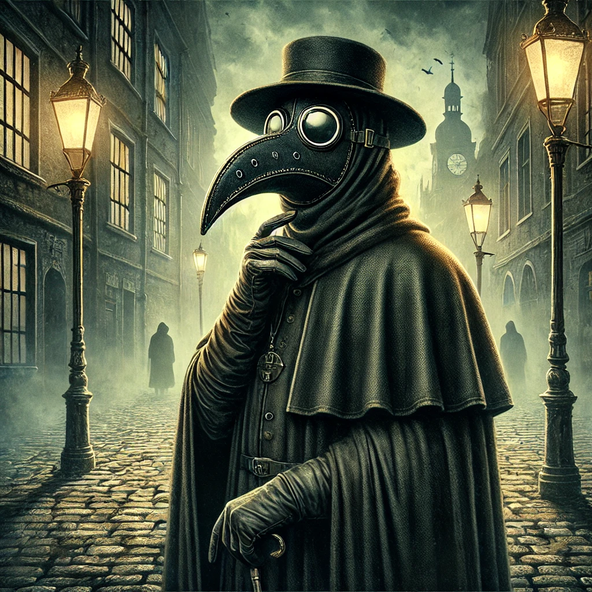

작가
알베르 카뮈
출판일
1947년
감상평에 대한 AI그림
재난적 상황 앞에서 나는 어떤 선택을 할 지에 대해 생각해볼 기회를 제공해 준 재미있는 문학 작품이다.

감상평에 대한 AI평가
알베르 카뮈의 페스트는 단순한 전염병 소설이 아니라, 인간 존재의 본질과 부조리한 세상 속에서의 연대를 깊이 탐구한 작품이다. 알제리의 오랑시에서突如(돌연) 발생한 페스트는 마치 운명처럼 사람들을 덮치고, 도시는 봉쇄된다. 공포와 절망 속에서도 다양한 인간 군상이 드러나며, 그들의 선택과 태도를 통해 삶과 죽음, 선과 악, 그리고 인간의 자유에 대한 철학적 질문을 던진다. 카뮈는 페스트를 통해 인간이 부조리에 맞서는 방식이 무엇인지 묻는다. 패배가 예정된 싸움일지라도, 그 속에서 서로를 돕고 끝까지 맞서는 것이야말로 인간다운 삶이라는 메시지가 깊은 여운을 남긴다.